MILIASTRA WORKSHOP / EPISODE 07Build Achievements and an Ultimate Reward
Configure five ordinary achievements, connect absolute Player progress to existing native events and inspect the Ultimate Achievement after a natural private-test win.
Use your own assigned achievement IDs. FreshStart and Clear Run have target1; the three coin milestones use1,3,5. Set absolute tally from the stored Player Coins after its write. Award Clear Run only on natural victory, before Settle Stage. The native system unlocks the Ultimate Achievement after the ordinary goals are complete.
00:3801. Find the Achievement module
Open the System Menu, choose Manage Peripheral System, and open Achievement. This module defines the achievements a player can earn in the stage. The name, target count and description explain a goal; the graph supplies its progress. Naming an achievement First Coin doesn't automatically detect a pickup. We'll connect that event ourselves.
Official guide: Concept Introduction / Advanced Concepts / Peripheral System / Achievements
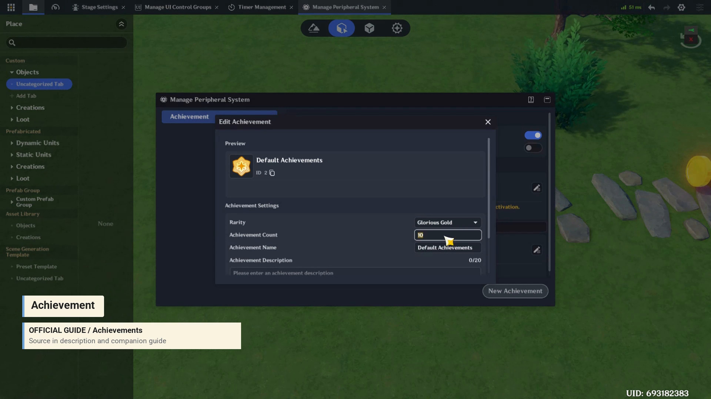
00:5802. Enable achievements for the test
System Menu → Manage Peripheral System → Achievement. Enable Achievements. In this recording, Enable in-room achievement settlement is OFF, while Test Play Settlement in the private-test options is ON. The in-room switch concerns room teams rather than matchmaking; choose settings appropriate to your intended entry mode.
Official guide: Concept Introduction / Advanced Concepts / Peripheral System / Achievements
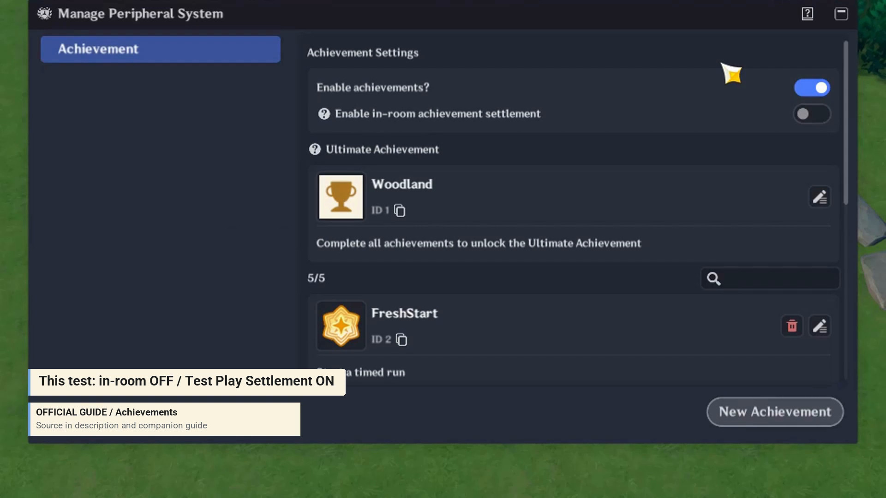
01:1703. Give each ordinary goal a clear meaning
An ordinary achievement has an ID, a rarity, an Achievement Count, a name and a description. Its progress starts from zero, and reaching the configured count completes the goal. We'll use the existing ordinary entry and add four more. The native rarity supplies the regular medal appearance in this client.
Official guide: Concept Introduction / Advanced Concepts / Peripheral System / Achievements
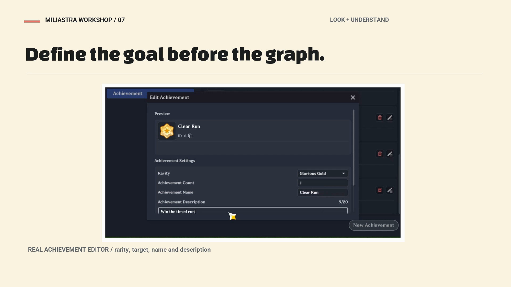
01:3704. Configure FreshStart
Edit the first ordinary entry. Name it FreshStart, set Achievement Count to one, and use Start a timed run as its description. The current input accepts ten characters for the name, so read the saved text back. Our entry has ID two. Your own IDs can differ; write down the ones actually assigned in your save.
Official guide: Concept Introduction / Advanced Concepts / Peripheral System / Achievements
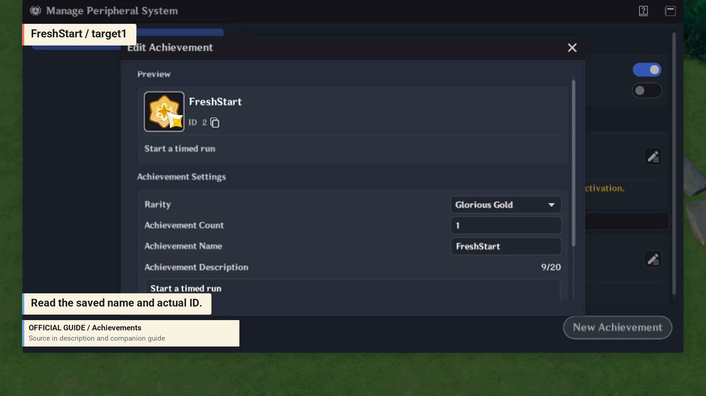
02:0205. Configure the three coin milestones
The actual configured IDs in this save are2 FreshStart target1 (Start a timed run),3 First Coin target1 (Collect one coin),4 ThreeCoins target3 (Collect three coins),5 All Five target5 (Collect five coins),6 Clear Run target1 (Win the timed run). Names are kept within the current10-character input limit and descriptions within20. Your generated IDs may differ. Regular medals use native Glorious Gold rarity; no custom regular icons were uploaded.
Official guide: Concept Introduction / Advanced Concepts / Peripheral System / Achievements
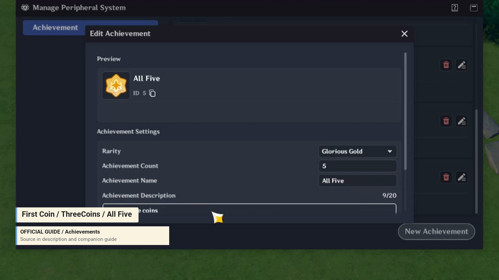
02:3806. Configure Clear Run
Add Clear Run with a target of one and the description Win the timed run. This is separate from All Five. Collecting the coins finishes the pickup milestone, while Clear Run waits for the natural victory path at the end of the countdown. Our five ordinary IDs are two through six, but use your own readback.
Official guide: Concept Introduction / Advanced Concepts / Peripheral System / Achievements
03:0207. Configure the Ultimate Achievement
Ultimate ID1 is named Woodland. Its uploaded square JPG trophy is adapted from Bootstrap Icons v1.13.1, MIT; the original license and icon file are included. The five ordinary entries and Ultimate configuration removed the inactive warning. There is no direct manual award of ID1 in the graph.
Official guide: Concept Introduction / Advanced Concepts / Peripheral System / Achievements
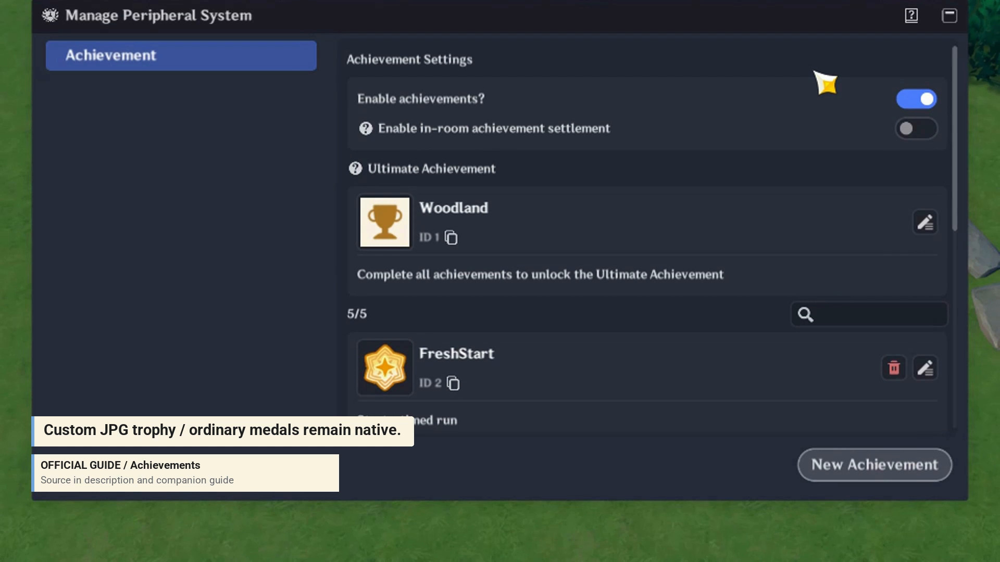
03:2308. Read the activation state
The official guide requires at least five ordinary achievements for the Ultimate Achievement, with their names and images configured. After our five entries and trophy are saved, the Currently not active warning disappears. The panel explains that completing all achievements unlocks the Ultimate Achievement. This shows a valid configuration. We'll still need to complete the goals in play.
Official guide: Concept Introduction / Advanced Concepts / Peripheral System / Achievements
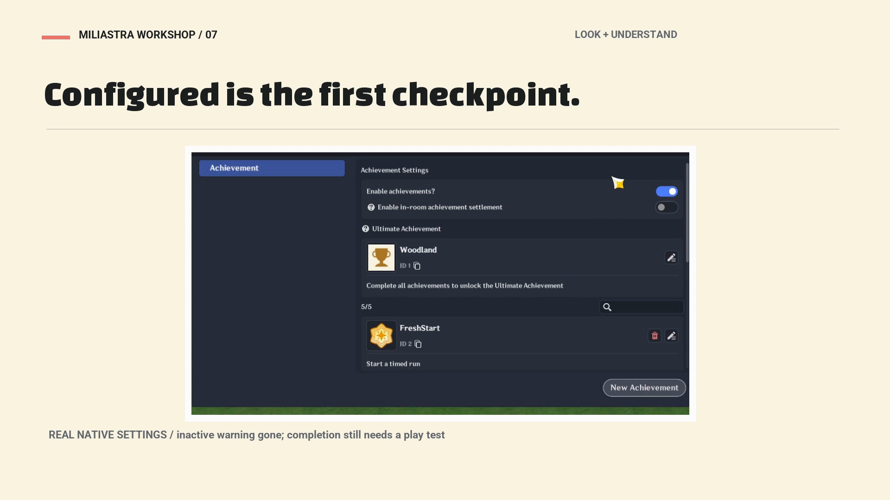
03:4509. Use an absolute progress tally
In the node library, choose Set Achievement Progress Tally. It takes the affected entity, an Achievement ID, and the tally to set. We'll target the Player who owns this progress. This is an absolute value. If the Player has collected three coins, we set the coin milestones to three; we don't increase them by the running total each time.
Official guide: Node Introduction / Server Nodes / Execution Nodes
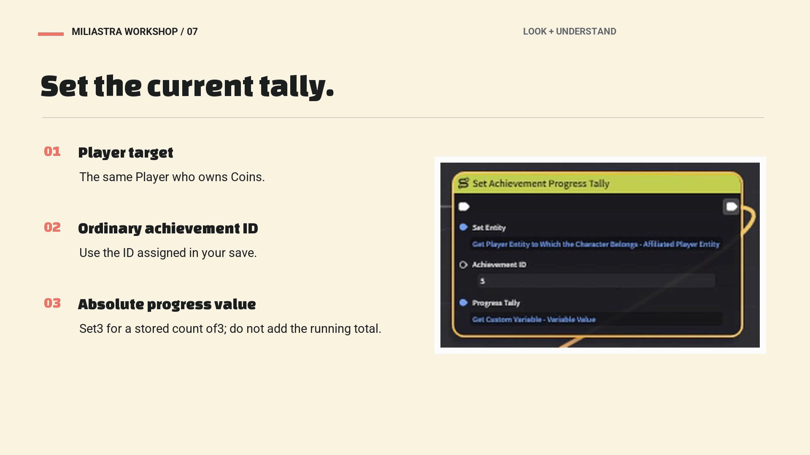
04:0610. Update FreshStart after an accepted start
Open the Player's Round Controller. Insert the achievement action in the accepted Start chain, after its existing guards. Target Self, use the ID for FreshStart, and set the tally to one. Connect the white execution line through the new node. An ignored second start request should not become a separate route around our guard.
Official guide: Node Introduction / Server Nodes / Execution Nodes
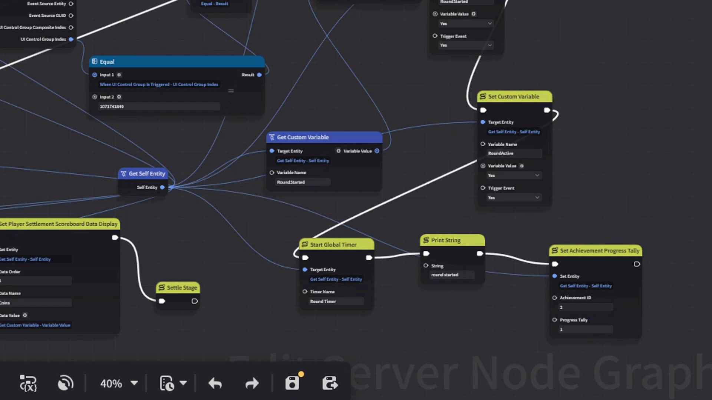
04:3211. Read Coins after the pickup write
Open the coin graph. After writing the new Coins total, use a separate Get Custom Variable to read that Player's current Coins. We already used this readback pattern for the printed counter. Keep the affiliated Player as the target; the disappearing coin isn't the owner of the Player's achievements.
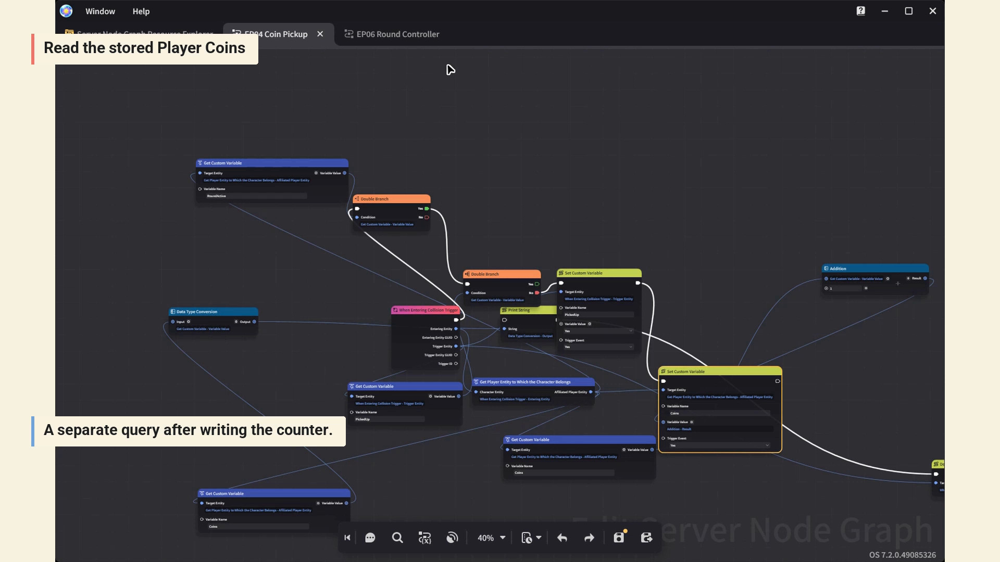
04:5612. Set all three milestone tallies
After writing Coins on the affiliated Player, a fresh Get Custom Variable reads that Player current Coins. Pass this absolute value to three Set Achievement Progress Tally actions for the assigned ordinary IDs3/4/5. Continue execution to the existing Print String and Destroy Entity. An Increase node fed with the running total would add too much.
Official guide: Node Introduction / Server Nodes / Execution Nodes
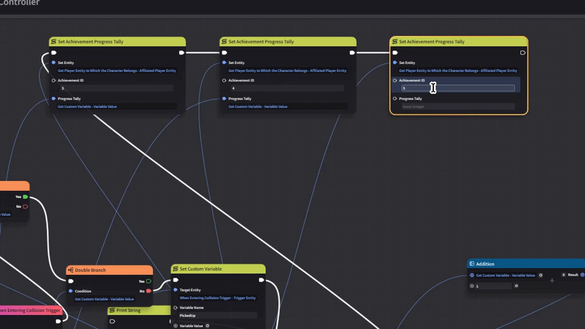
05:2913. Update Clear Run before settlement
On the accepted natural Victory branch, set Player Clear Run tally1 before Settle Stage. Leave the failure path without this award. The automatic Ultimate unlock is handled by the configured achievement system.
Official guide: Node Introduction / Server Nodes / Execution Nodes
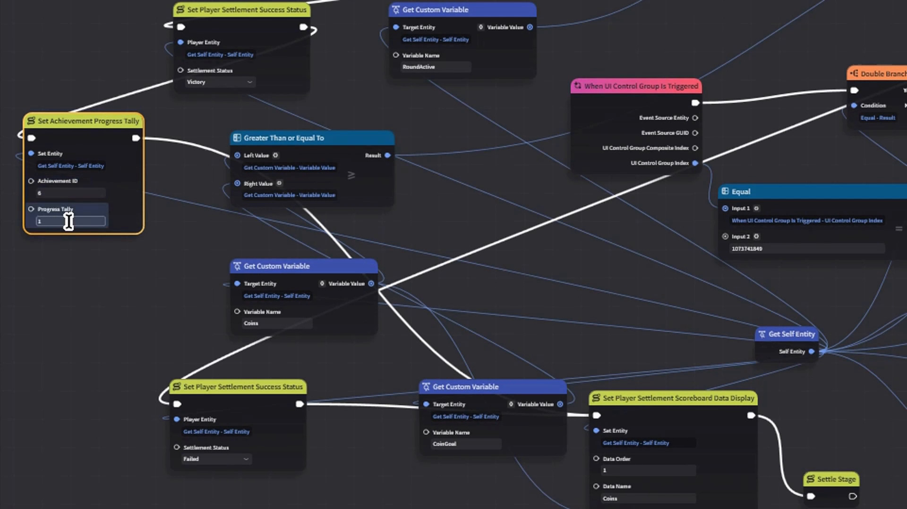
05:5914. Achievement progress and round Coins differ
Official documentation says achievement progress can carry across playthroughs. This lesson sets absolute progress from the current run; all five goals are reachable in one win. Standard Player Coins initialization and the persistence of earned achievements are distinct behaviours. Test any cumulative or reset design deliberately.
Official guide: Concept Introduction / Advanced Concepts / Peripheral System / Achievements
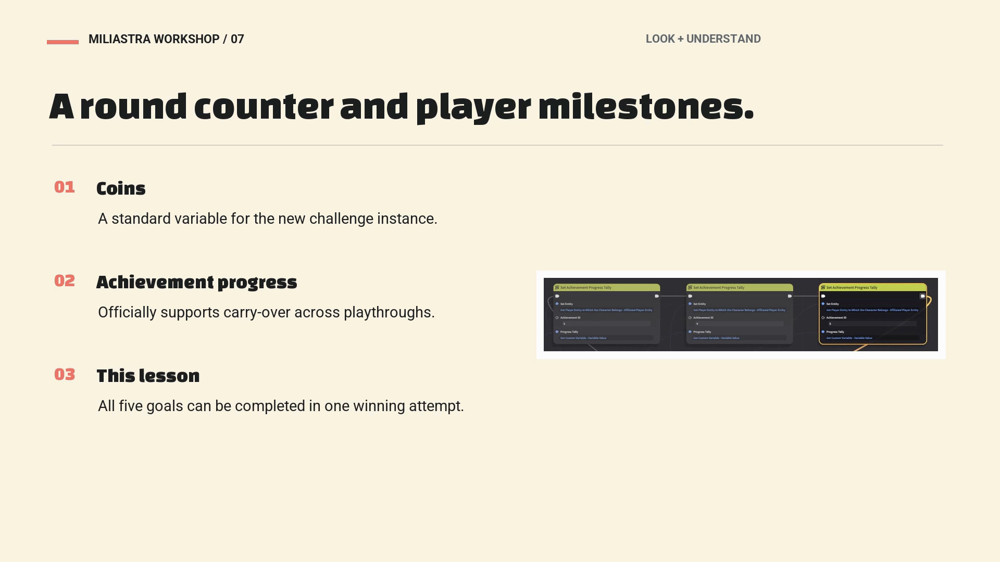
06:2215. Save the graphs and the scene
Save both edited graphs, check their mounted names, and Quick Save the scene. Read the new execution connections once more. FreshStart belongs to the accepted Start path. The three coin milestones follow the stored Player count. Clear Run belongs to natural victory, before settlement. Each uses its own ordinary ID.
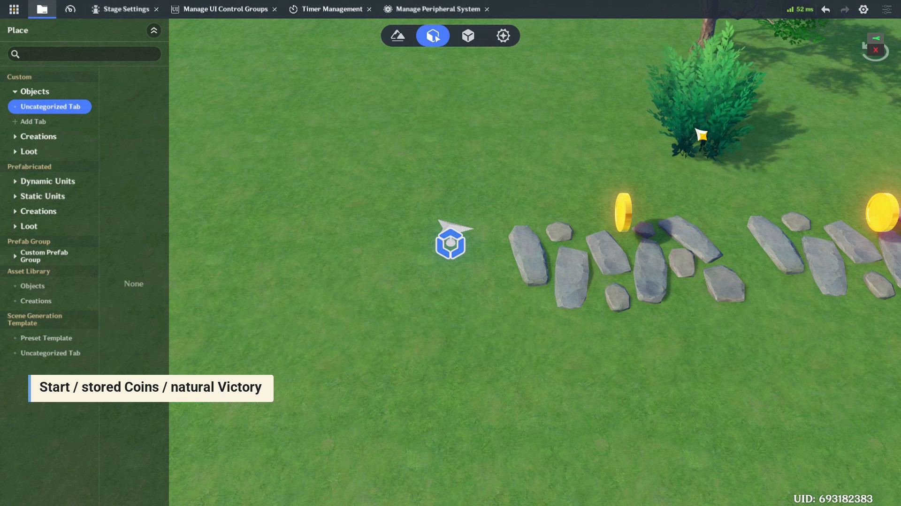
06:4316. Complete the challenge naturally
Start a fresh private test, press F, and collect the five coins. Watch the same progress bar and countdown from the previous lessons. Let the full two minutes expire naturally. The original recording retains the entire run; the tutorial removes part of the wait. A full bar alone isn't our final achievement check.
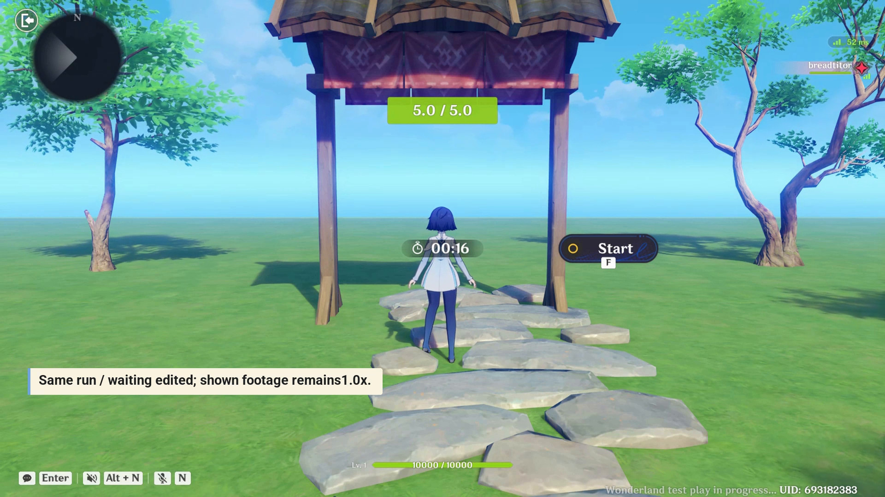
07:0517. Inspect Achievement Obtained
The actual private-test run reached natural zero after120seconds with five coins, then Victory/5 Coins. The preceding settlement page shows Achievement Obtained with FreshStart, First Coin, ThreeCoins, All Five, Clear Run and Unlock an Ultimate Achievement with the uploaded trophy. This is the observed private preview; it does not establish public or persistent-account awards.
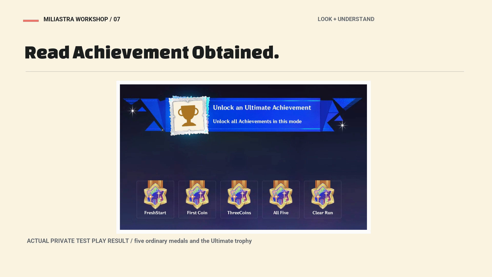
07:2518. Keep the test result in context
This is the result from this private Test Play, with Test Play Settlement enabled. It isn't a public-release or permanent-account award check. The craftsperson level visible on this account is also separate from our five-achievement configuration. Check current eligibility and publishing requirements in the creator interface when preparing your own stage for release.
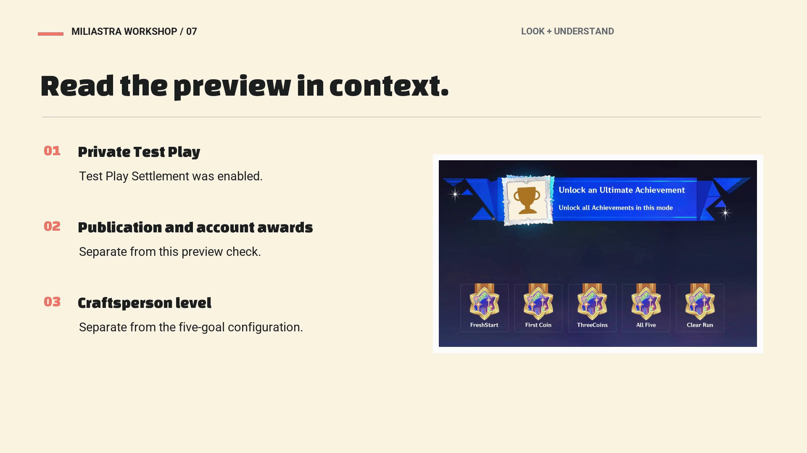
07:4619. If a goal does not complete
Check the ordinary entry's target and actual ID first. Then follow the event's execution line to the progress node, check its Player target and tally, and inspect the appropriate settlement page. For a missing Ultimate Achievement, review all ordinary goals and its configuration. Changing a display name won't repair a wrong numeric ID in the graph.
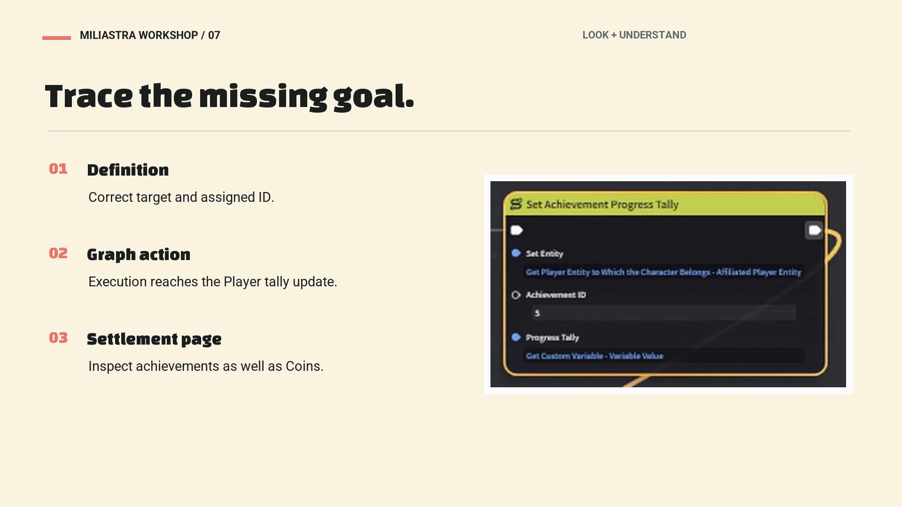
08:0720. Explain what each goal measures
Try naming the three event types behind these five goals: accepted Start, a stored coin count, and natural victory. Explain why All Five and Clear Run can be separate achievements. Keep this tested lesson copy. Next we'll deliberately introduce a small display fault in another practice copy, diagnose it, and check a recoverable final build.
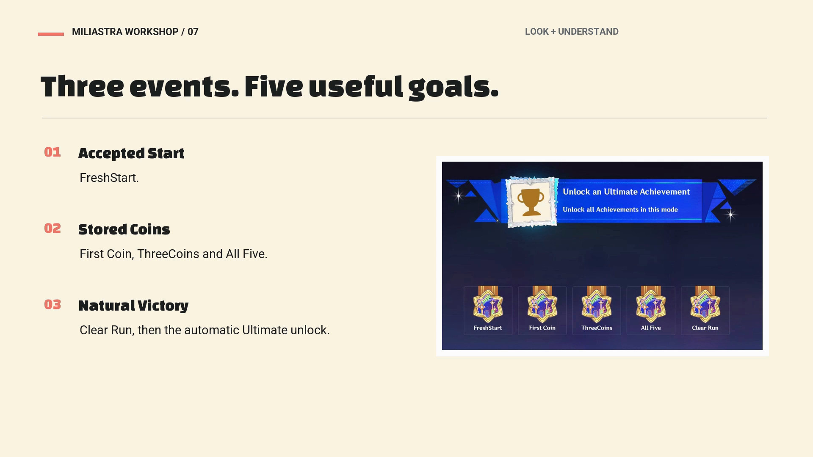
Official references
These explanations use our own words. Native interface labels are shown in the images. A short test covers the actions shown; test the important systems in your own version after changes.